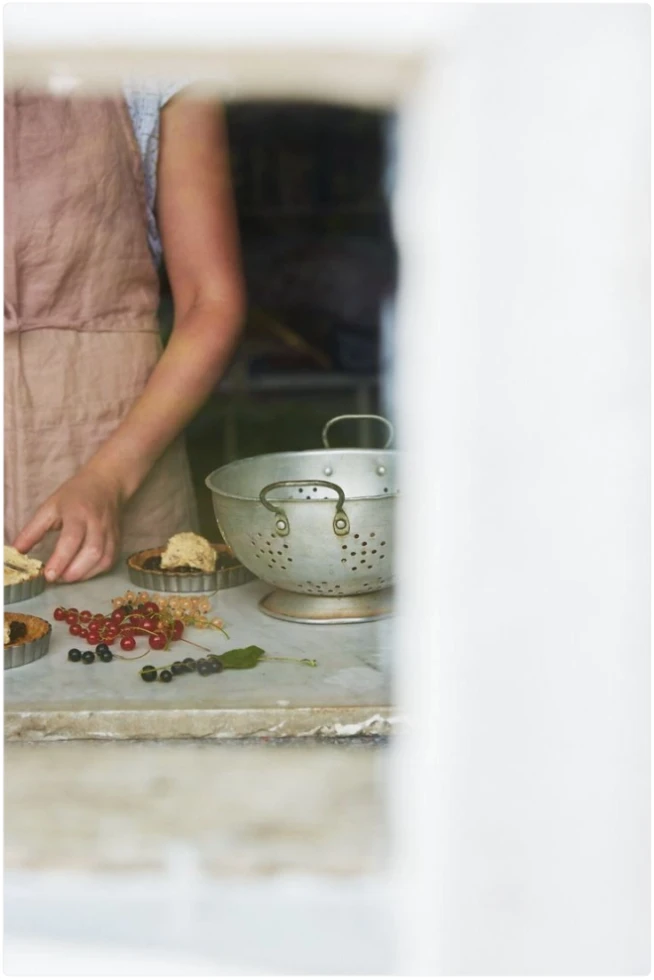
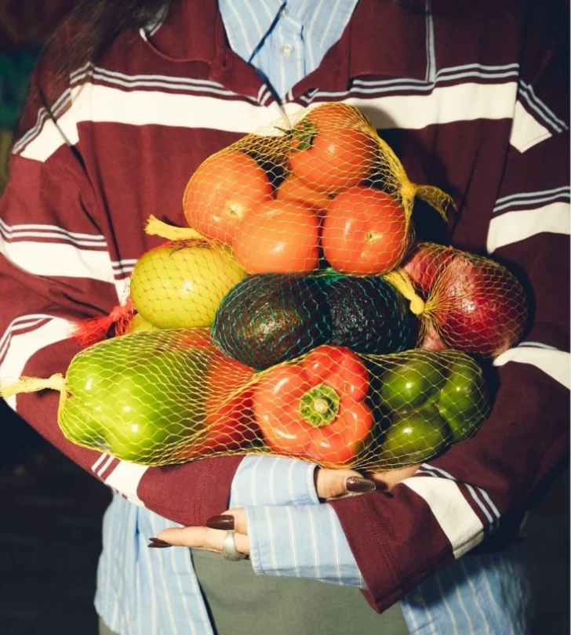

Hoy sale algo del horno que no esperabas.
Temporada, proximidad y creatividad. Para disfrutar solo, o compartir en la mesa.

La mayoría de las veces comemos sin mirar. De pie, deprisa, sin preguntarnos de dónde viene lo que nos llevamos a la boca, si es su temporada, si de verdad nos está nutriendo — o con quién lo estamos compartiendo.
No es que falte comida. Es que falta la pausa: pararse a apreciar el origen, la estación, el momento. Comer se ha vuelto un trámite entre una cosa y la siguiente.
Arrel existe para lo contrario: recuperar esa pausa. Que un ingrediente de temporada, una pieza recién horneada o una mesa compartida vuelvan a ser un momento que se nota, no uno que pasa sin darse cuenta.
No buscamos inventar por inventar. Nos apasiona reinterpretar elaboraciones que conocemos de toda la vida y darles una nueva mirada a través de la creatividad: explorar combinaciones de sabores, ingredientes locales y de proximidad, y productos de temporada. Partimos de lo familiar para descubrir nuevas formas de disfrutarlo.
Comer no es solo ingerir alimentos: es recibir, agradecer, compartir, cuidar, conectar.

Lo que no cambia en ninguna receta.
Origen
Ingredientes y productores del entorno, con procedencia transparente.
Temporalidad
Una oferta que evoluciona con las estaciones.
Creatividad
Reinterpretamos recetas y formatos familiares con combinaciones originales y una mirada gastronómica propia.
Experiencia
Cada producto invita a descubrir, apreciar y saborear; la experiencia se completa al compartirlo y conectar con lo que nos rodea.
Lo que siempre está, y lo que cambia con la temporada.
Sin complicarlo.
Qué hay hoy
El horno cambia con la temporada. Mira qué sale hoy.
Pide tu pieza
Elige y listo.